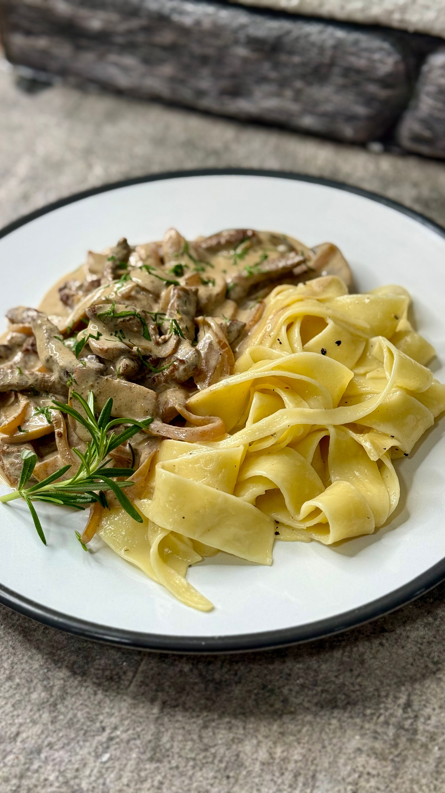

Beef Stroganoff

Beef stroganoff made in the slow cooker / crock pot.
Ingredients
- 2 pounds beef stew meat
- 1 large onion chopped
- 1 can (10 3/4 ounces) condensed cream of mushroom soup
- 1 can (10 3/4 ounces) condensed cream of onion soup
- 1 can (8 ounces) sliced mushrooms, drained
- 1/4 teaspoon pepper
- 1 package (8 ounces) cream cheese, cubed
- 1 container (8 ounces) sour cream
- 6 cups hot cooked noodles or rice, for serving, if desired
Steps
- Mix beef, onion, soups, mushrooms, and pepper in 3 1/2 to 6 quart slow cooker.
- Cover and cook on low heat setting 8 to 10 hours or until beef is very tender.
- Stir cream cheese into beef mixture until melted. Stir in sour cream.
- Serve beef mixture over noodles or rice.
Go Home